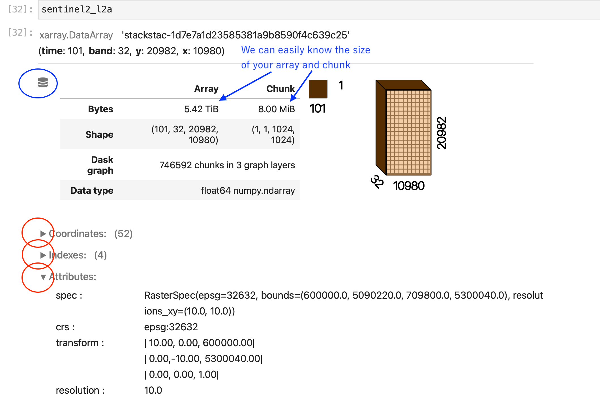

Data chunking with zarr and kerchunk.#
Context#
When dealing with large data files or collections, it’s often impossible to load all the data you want to analyze into a single computer’s RAM at once. This is a situation where the Pangeo ecosystem can help you a lot. Xarray offers the possibility to work lazily on data chunks, which means pieces of an entire dataset. By reading a dataset in chunks we can process our data piece by piece on a single computer and even on a distributed computing cluster using Dask (Cloud or HPC for instance).
How we will process these ‘chunks’ in a parallel environment will be discussed in dask_introduction. The concept of chunk will be explained here.
When we process our data piece by piece, it’s easier to have our input or ouput data also saved in chunks. Zarr is the reference library in the Pangeo ecosystem to save our Xarray multidimentional datasets in chunks.
Zarr is not the only file format which uses chunk. We will also be using kerchunk library in this notebook to build a virtual chunked dataset based on NetCDF files, and show how it optimizes the access and analysis of large datasets.
The analysis is very similar to what we have done in previous episodes, however we will use data on a global coverage and not only on a small geographical area (e.g. Lombardia).
Data#
In this episode, we will be using Global Long Term Statistics (1999-2019) products provided by the Copernicus Global Land Service and access them through S3-comptabile storage (OpenStack Object Storage “Swift”) with a data catalog we have created and made publicly available.
Setup#
This episode uses the following main Python packages:
fsspec [fsspecDTeam18]
s3fs [S3FsDTeam16]
dask [DaskDTeam16]
kerchunk [KerchunkDTeam21]
geopandas [JdBF+20]
matplotlib [Hun07]
Please install these packages if not already available in your Python environment (see Setup page).
Packages#
In this episode, Python packages are imported when we start to use them. However, for best software practices, we recommend you to install and import all the necessary libraries at the top of your Jupyter notebook.
title here#
we are …
import pystac_client
import geopandas as gpd
from shapely.geometry import mapping
import stackstac
import warnings
warnings.filterwarnings("ignore")
%%time
aoi = gpd.read_file('data/catchment_outline.geojson', crs="EPGS:4326")
aoi_geojson = mapping(aoi.iloc[0].geometry)
URL = "https://earth-search.aws.element84.com/v1"
catalog = pystac_client.Client.open(URL)
items = catalog.search(
intersects=aoi_geojson,
collections=["sentinel-2-l2a"],
datetime="2019-02-01/2019-06-10"
).item_collection()
sentinel2_l2a = stackstac.stack(items)
---------------------------------------------------------------------------
CPLE_OpenFailedError Traceback (most recent call last)
File fiona/ogrext.pyx:136, in fiona.ogrext.gdal_open_vector()
File fiona/_err.pyx:291, in fiona._err.exc_wrap_pointer()
CPLE_OpenFailedError: data/catchment_outline.geojson: No such file or directory
During handling of the above exception, another exception occurred:
DriverError Traceback (most recent call last)
File <timed exec>:1
File ~/micromamba/envs/bids23/lib/python3.11/site-packages/geopandas/io/file.py:297, in _read_file(filename, bbox, mask, rows, engine, **kwargs)
294 else:
295 path_or_bytes = filename
--> 297 return _read_file_fiona(
298 path_or_bytes, from_bytes, bbox=bbox, mask=mask, rows=rows, **kwargs
299 )
301 else:
302 raise ValueError(f"unknown engine '{engine}'")
File ~/micromamba/envs/bids23/lib/python3.11/site-packages/geopandas/io/file.py:338, in _read_file_fiona(path_or_bytes, from_bytes, bbox, mask, rows, where, **kwargs)
335 reader = fiona.open
337 with fiona_env():
--> 338 with reader(path_or_bytes, **kwargs) as features:
339 crs = features.crs_wkt
340 # attempt to get EPSG code
File ~/micromamba/envs/bids23/lib/python3.11/site-packages/fiona/env.py:457, in ensure_env_with_credentials.<locals>.wrapper(*args, **kwds)
454 session = DummySession()
456 with env_ctor(session=session):
--> 457 return f(*args, **kwds)
File ~/micromamba/envs/bids23/lib/python3.11/site-packages/fiona/__init__.py:292, in open(fp, mode, driver, schema, crs, encoding, layer, vfs, enabled_drivers, crs_wkt, allow_unsupported_drivers, **kwargs)
289 path = parse_path(fp)
291 if mode in ("a", "r"):
--> 292 colxn = Collection(
293 path,
294 mode,
295 driver=driver,
296 encoding=encoding,
297 layer=layer,
298 enabled_drivers=enabled_drivers,
299 allow_unsupported_drivers=allow_unsupported_drivers,
300 **kwargs
301 )
302 elif mode == "w":
303 colxn = Collection(
304 path,
305 mode,
(...)
314 **kwargs
315 )
File ~/micromamba/envs/bids23/lib/python3.11/site-packages/fiona/collection.py:243, in Collection.__init__(self, path, mode, driver, schema, crs, encoding, layer, vsi, archive, enabled_drivers, crs_wkt, ignore_fields, ignore_geometry, include_fields, wkt_version, allow_unsupported_drivers, **kwargs)
241 if self.mode == "r":
242 self.session = Session()
--> 243 self.session.start(self, **kwargs)
244 elif self.mode in ("a", "w"):
245 self.session = WritingSession()
File fiona/ogrext.pyx:588, in fiona.ogrext.Session.start()
File fiona/ogrext.pyx:143, in fiona.ogrext.gdal_open_vector()
DriverError: data/catchment_outline.geojson: No such file or directory
sentinel2_l2a
---------------------------------------------------------------------------
NameError Traceback (most recent call last)
Cell In[3], line 1
----> 1 sentinel2_l2a
NameError: name 'sentinel2_l2a' is not defined
What is a chunk#
If you look carefully to sentinel2_l2a, xarray.DataArray is a dask.array with a chunk size of (1, 1, 1024, 1024). The full data would load arrays of dimensions (101, 32, 20982, 10980), 746 592 of the ‘chunk’, in total 5.42 TiB into the computer’s RAM.
We can see the Dask Array information by clicking the icon as circled blue in the image below.

By clicking Red circled triangle icon, we can have detailed informations on the xarray, such as Coordinates, Indexes and Attributes.
When you create Xarray object using stackstac, we can easily turns STAC collection into a lazy xarray.DataArray, in chunk form, so then it is backed by dask.
The size and shape of chunk which we will use defines the parallelisation done by Dask, thus Picking a good chunksize will have significant effects on performance.
This is where understanding and using chunking correctly comes into play.
Chunking is splitting a dataset into small pieces.
Original dataset, in one piece,

and we split it into several smaller pieces.

We split it into pieces so that we can process our data block by block or chunk by chunk.
In our case, for the moment, we used stackstac without specifying ‘chunk’ explicitly. The dataset is composed of 8MiB each, each contains, 1 time step, 1 band, 1024 x 1024 on x and y direction.

If we have too small chunk size, we will divide our work flow in too small pieces, which can create too many communications, too many ‘distirbution’ overheads. If we have too big chunk size, we may not be able to hold the enough memory and our workflow may die.
The right size of chunk depends on your computation and the machine you use.
Here, 8MiB, is very small compare to usual RAM size available. For example, dask’s default array size is 128MiB.
import dask
dask.config.get('array.chunk-size')
Modifying chunks#
Lets try to modify our chunk size.
To modify chunks on your existing Xarray DataArray we can use chunk function of Xarray.
We know that we only need 3 bands for computing the snow index example, so we select only ‘green’,’swir16’,’scl’ to simplyfy our example.
We would like to have each time series separeated in each chunk, then keep all band informnation on one chunk, and let dask to compute x and y coordinate’s chunk size.
sentinel2_l2a=sentinel2_l2a.sel(
band=['green','swir16','scl']).chunk(
chunks={'time': 1, 'band':3, 'x':'auto','y':'auto'})
sentinel2_l2a
If you look into details of any variable in the representation above, you’ll see that each x and y coordinate’s each ‘chunk’ is bigger, and we have much less chunks (6666 chunks) than example before. Chunk size as 96 MiB, is already more manageable than 8MiB small chunk.
sentinel2_l2a.chunk(chunks = ( 1, -1, 12048,2048))
You can try to apply different ways for specifying chunk.
- chunks = -1 -> the entire array will be used as a single chunk
- chunks = {'x':-1, 'y': 1000} -> chunks of entire _x_ dimension, but splitted every 1000 values on _y_ dimension
- chunks = {'x':-1, 'y': 'auto'} -> Xarray relies on Dask to use an ideal size according to the preferred chunk sizes for _y_ dimension
- chunks = { 'x':-1 ,'y':"500MiB" } -> Xarray seeks the size according to a specific memory target expressed in MiB
- chunks = ( 1, 3, 12048,2048) -> Specifying chunk size in the order of dimension.
Defining the chunk at the creatioin of Xarray#
We can define the chunk size when we create the object.
This is usually done with Xarray using the chunks kwarg when opening a file with xr.open_dataset or with xr.open_mfdataset, if you create Xarray from your local file.
In our snow index example, we create Xarray from stackstac. As stackstac’s default ‘chunksize’ definition is 1024 for x and y dimension, we had that chunksize. We can pass the chunksize option to stdeackstac and make that bigger.
%%time
sentinel2_l2a = stackstac.stack(items
,assets=['green','swir16','scl']
,chunksize=( 1, 3, 2048,2048)
)
sentinel2_l2a
So, why chunks?#
Chunks are mandatory for accessing files or dataset that are bigger than a single computer’s memory. If all the data has to be accessed, it can be done sequentially e.g. chunks are processed one after the othe).
Moreover, chunks allow for distributed processing and so increased speed for your data analysis, as seen in the next episode.
Chunks and files#
Xarray chunking possibilities also relies on the underlying input or output file format used. Most modern file format allows to store a dataset or a single file using chunks. NetCDF4 uses chunks when storing a file on the disk through the use of HDF5. Any read of data in a NetCDF4 file will lead to the load of at least one chunk of this file. So when reading one of its chunk as defined in open_dataset call, Xarray will take advantage of native file chunking and won’t have to read the entire file too.
Yet, it is really important to note that Xarray chunks and file chunks are not necessarily the same. It is however a really good idea to configure Xarray chunks so that they align well on input file format chunks (so ideally, Xarray chunks should contain one or several input file chunks).
Zarr storage format#
This brings to our next subjects Zarr and Kerchunk.
If we can have our original dataset already ‘chunked’ and accessed in an optimized way according to it’s actual byte storage on disk, we won’t need to load entire dataset every time, and our data anlayzis, even working on the entire dataset, will be greatly optimized.
Let’s convert our intermediate data into Zarr format so that we can learn what it is. We can keep the data as in DataArray or convert that into DataSet before storing them.
We start again from loading data using stackstac, but this time we go to next step, clipping the data and computation of snow index, and lets try to save those intermediate result in a zarr file.
# Data Manipulation and Analysis Libraries
import pandas as pd
import numpy as np
# Geospatial Data Handling Libraries
import geopandas as gpd
from shapely.geometry import mapping
import pyproj
# Multidimensional and Satellite Data Libraries
import xarray as xr
import rioxarray as rio
import stackstac
# Data Visualization Libraries
import holoviews as hv
import hvplot.xarray
import hvplot.pandas
# Data parallelization and distributed computing libraries
import dask
from dask.distributed import Client, progress, LocalCluster
# STAC Catalogue Libraries
import pystac_client
import warnings
warnings.filterwarnings("ignore")
cluster = LocalCluster()
client = Client(cluster)
client
Load data using stackstac (with specific chunk)#
%%time
aoi = gpd.read_file('data/catchment_outline.geojson', crs="EPGS:4326")
aoi_geojson = mapping(aoi.iloc[0].geometry)
URL = "https://earth-search.aws.element84.com/v1"
catalog = pystac_client.Client.open(URL)
items = catalog.search(
intersects=aoi_geojson,
collections=["sentinel-2-l2a"],
datetime="2019-02-01/2019-06-10"
).item_collection()
ds = stackstac.stack(items
,assets=['green','swir16','scl']
,chunksize=( 1, 3, 1024,1024)
)
#ds
Coomputing Snow index#
green = ds.sel(band='green')
swir = ds.sel(band='swir16')
scl = ds.sel(band='scl')
ndsi = (green - swir) / (green + swir)
snow = xr.where((ndsi > 0.42) & ~np.isnan(ndsi), 1, ndsi)
snowmap = xr.where((snow <= 0.42) & ~np.isnan(snow), 0, snow)
mask = np.logical_not(scl.isin([8, 9, 3]))
snow_cloud = xr.where(mask, snowmap, 2)
#snow_cloud
Clip the data#
aoi_utm32 = aoi.to_crs(epsg=32632)
geom_utm32 = aoi_utm32.iloc[0]['geometry']
snow_cloud.rio.write_crs("EPSG:32632", inplace=True)
snow_cloud.rio.set_nodata(np.nan, inplace=True)
snow_cloud = snow_cloud.rio.clip([geom_utm32])
#snow_cloud
Lets save the intermediate result of a few days in a zarr format#
test=snow_cloud.isel(time=slice(0,3))
test
Before saving, we clean the chunk size, clean attribute and save the data in Xarray DataSet format#
test=test.chunk(chunks = {'x':'auto', 'y': 'auto'}).to_dataset(name='data')
test
%%time
def remove_attrs(obj, to_remove):
new = obj.copy()
new.attrs = {k: v for k, v in obj.attrs.items() if k not in to_remove}
return new
def encode(obj):
object_coords = [name for name, coord in obj.coords.items() if coord.dtype.kind == "O"]
return obj.drop_vars(object_coords).pipe(remove_attrs, ["spec", "transform"])
test.pipe(encode).to_zarr('test.zarr',mode='w')
Load the temporaly data saved as zarr back to Xarray#
snow_cloud=xr.open_zarr('test.zarr').data
Group by to a day, and plot the results#
clipped_date = snow_cloud.groupby(snow_cloud.time.dt.floor('D')).max(skipna=True)
clipped_date = clipped_date.rename({'floor': 'date'})
clipped_date.hvplot.image(
x='x',
y='y',
groupby='date',
crs=pyproj.CRS.from_epsg(32632),
cmap='Pastel2',
clim=(-1, 2),
frame_width=500,
frame_height=500,
title='Snowmap',
geo=True, tiles='OSM')
- What about saving the data in Netcdf format? `ls -la test.zarr` and `ls -la test.zarr/nobs `
- You can try to explore the zarr file you just created using `ls -la test.zarr` and `ls -la test.zarr/nobs `
- You can explore zarr metadata file by `cat test.zarr/.zmetadata`
- Did you find the __chunks__ we defined previously in your zarr file?
xr.open_zarr('test.zarr').to_netcdf('test.nc')
!du -sh test.zarr/ test.nc
!ls -la test.zarr/data
!cat test.zarr/.zmetadata | head -n 30
Zarr format main characteristics are the following:
Every chunk of a Zarr dataset is stored as a single file (see x.y files in
ls -al test.zarr/data)Each Data array in a Zarr dataset has a two unique files containing metadata:
.zattrs for dataset or dataarray general metadatas
.zarray indicating how the dataarray is chunked, and where to find them on disk or other storage.
Zarr can be considered as an Analysis Ready, cloud optimized data (ARCO) file format, discussed in data_discovery section.
Opening multiple NetCDF files and Kerchunk#
As shown in the Data discovery chapter, when we have several files to read at once, we need to use Xarray open_mfdataset. When using open_mfdataset with NetCDF files, each NetCDF file is considerd as ‘one chunk’ by default as seen above.
When calling open_mfdataset, Xarray also needs to analyse each NetCDF file to get metadatas and tried to build a coherent dataset from them. Thus, it performs multiple operations, like concartenate the coordinate, checking compatibility, etc. This can be time consuming ,especially when dealing with object storage or you have more than thousands of files. And this has to be repeated every time, even if we use exactly the same set of input files for different analysis.
Kerchunk library can build virtual Zarr Dataset over NetCDF files which enables efficient access to the data from traditional file systems or cloud object storage.
And that is not the only optimisation kerchunk brings to pangeo ecosystem.
Exploiting native file chunks for reading datasets#
As already mentioned, many data formats (for instance HDF5, netCDF4 with HDF5 backend, geoTIFF) have chunk capabilities. Chunks are defined at the creation of each file. Let’s call them ‘native file chunks’ to distinguish that from ‘Dask chunks’. These native file chunks can be retrieved and used when opening and accessing the files. This will allow to significantly reduce the amount of IOs, bandwith, and memory usage when analyzing Data Variables.
kerchunk library can extract native file chunks layout and metadata from each file and combine them into one virtual Zarr dataset.
Extract chunk information#
We extract native file chunk information from each NetCDF file using kerchunk.hdf.
Let’s start with a single file.
import kerchunk.hdf
We use kerchunk.hdf because our files are written in netCDF4 format which is based on HDF5 and SingleHdf5ToZarr to translate the metadata of one HDF5 file into Zarr metadata format. The parameter inline_threshold is an optimization and tells SingleHdf5ToZarr to include chunks smaller than this value directly in the output.
remote_filename = 'https://object-store.cloud.muni.cz/swift/v1/foss4g-data/CGLS_LTS_1999_2019/c_gls_NDVI-LTS_1999-2019-1221_GLOBE_VGT-PROBAV_V3.0.1.nc'
with fsspec.open(remote_filename) as inf:
h5chunks = kerchunk.hdf.SingleHdf5ToZarr(inf, remote_filename, inline_threshold=100)
chunk_info = h5chunks.translate()
Let’s have a look at chunk_info. It is a Python dictionary so we can use pprint to print it nicely.
Content is a bit complicated, but it’s only metadata in Zarr format indicating what’s in the original file, and where the chunks of the file are located (bytes offset).
from pprint import pprint
pprint(chunk_info)
- Did you recognise the similarities with test.zarr's zarr metadata file?
After we have collected information on the native file chunks in the original data file and consolidated our Zarr metadata, we can open the files using zarr and pass this chunk information into a storage option. We also need to pass "consolidated": False because the original dataset does not contain any zarr consolidating metadata.
LTS = xr.open_dataset(
"reference://",
engine="zarr",
backend_kwargs={
"storage_options": {
"fo": chunk_info,
},
"consolidated": False
}
)
LTS
As you can notice above, all the Data Variables are already chunked according to the native file chunks of the NetCDF file.
Combine all LTS files into one kerchunked single ensemble dataset#
Now we will combine all the files into one kerchunked consolidated dataset, and try to open it as a xarray dataset.
Let us first collect the chunk information for each file.
fs.ls('foss4g-data/CGLS_LTS_1999_2019/')
We have 36 files to process, but for this chunking_introduction example, we’ll just use 6 file so that it take less time.
from datetime import datetime
%%time
s3path = 's3://foss4g-data/CGLS_LTS_1999_2019/c_gls_NDVI-LTS_1999-2019-0[7-8]*.nc'
chunk_info_list = []
time_list = []
for file in fs.glob(s3path):
url = 'https://object-store.cloud.muni.cz/swift/v1/' + file
t = datetime.strptime(file.split('/')[-1].split('_')[3].replace('1999-', ''), "%Y-%m%d")
time_list.append(t)
print('working on ', file)
with fsspec.open(url) as inf:
h5chunks = kerchunk.hdf.SingleHdf5ToZarr(inf, url, inline_threshold=100)
chunk_info_list.append(h5chunks.translate())
This time we use MultiZarrToZarr to combine multiple kerchunked datasets into a single logical aggregated dataset. Like when opening multiple files with Xarray open_mfdataset, we need to tell MultiZarrToZarr how to concatenate all the files. There is no time dimension in the original dataset, but one file corresponds to one date (average over the period 1999-2019 for a given 10-day period e.g. January 01, January 11, January 21, etc.).
%%time
from kerchunk.combine import MultiZarrToZarr
mzz = MultiZarrToZarr(
chunk_info_list,
coo_map={'INDEX': 'INDEX'},
identical_dims=['crs'],
concat_dims=["INDEX"],
)
out = mzz.translate()
Then, we can open the complete dataset using our consolidated Zarr metadata.
%%time
LTS = xr.open_dataset(
"reference://",
engine="zarr",
backend_kwargs={
"storage_options": {
"fo": out,
},
"consolidated": False
}
)
LTS
We can save the consolidated metadata for our dataset in a file, and reuse it later to access the dataset.
import json
jsonfile='test.json'
with open(jsonfile, mode='w') as f :
json.dump(out, f)
We can then load data from this catalog.
import xarray as xr
LTS = xr.open_dataset(
"reference://", engine="zarr",
backend_kwargs={
"storage_options": {
"fo":'./test.json',
},
"consolidated": False
}
)
LTS
The catalog (json file we created) can be shared on the cloud (or GitHub, etc.) and anyone can load it from there too. This approach allows anyone to easily access LTS data and select the Area of Interest for their own study.
We have prepared json file based on 36 netcdf file, and published it online as catalogue=”https://object-store.cloud.muni.cz/swift/v1/foss4g-catalogue/c_gls_NDVI-LTS_1999-2019.json” We can try to load it.
catalogue="https://object-store.cloud.muni.cz/swift/v1/foss4g-catalogue/c_gls_NDVI-LTS_1999-2019.json"
LTS = xr.open_dataset(
"reference://", engine="zarr",
backend_kwargs={
"storage_options": {
"fo":catalogue
},
"consolidated": False
}
)
LTS
We will use this catalogue in dask_introduction chapter.
Operations on a chunked dataset#
Let’s have a look of our chunked test dataset backend representation.
test.data is the backend array Python representation of Xarray’s Data Array, Dask Array when using chunking, Numpy by default.
We will introduce Dask arrays and Dask graphs visualization in the next section dask_introduction.
Anyway, when applying chunk function you may have the impression that the chunks sizes just changes and everything will be fine.
However, as you can see in the graph visualization above, Xarray will actually have to fetch at least one entire initial chunk that was defined when opening the Dataset at first before rechunking at a smaller size or even selecting one value. This is true when applying any funtions on any values: Xarray will work by loading entire chunks.
You can imagine that it will not be very optimal if you load one file as an entire chunk, or if your initial chunks are too big (your Python Jupyter kernel may crash!), especially with large numbers of files and large files. Choosing an appropriate chunk size is really important and depends on your analysis.
You can find a really nice article by Dask team on how to chose the right chunk size here.
Conclusion#
Understanding chunking is key to optimize your data analysis when dealing with big datasets. In this episode we learned how to optimize the data access time and memory resources by exploiting native file chunks from netCDF4 data files and instructing Xarray to access data per chunk. However, computations on big datasets can be very slow on a single computer, and to optimize its time we may need to parallelize your computations. This is what you will learn in the next episode with Dask.
- Chunking
- zarr
- kerchunk
Packages citation#
- HH17
S. Hoyer and J. Hamman. Xarray: N-D labeled arrays and datasets in Python. Journal of Open Research Software, 2017. URL: https://doi.org/10.5334/jors.148, doi:10.5334/jors.148.
- Hun07
J. D. Hunter. Matplotlib: a 2d graphics environment. Computing in Science & Engineering, 9(3):90–95, 2007. doi:10.1109/MCSE.2007.55.
- JdBF+20
Kelsey Jordahl, Joris Van den Bossche, Martin Fleischmann, Jacob Wasserman, James McBride, Jeffrey Gerard, Jeff Tratner, Matthew Perry, Adrian Garcia Badaracco, Carson Farmer, Geir Arne Hjelle, Alan D. Snow, Micah Cochran, Sean Gillies, Lucas Culbertson, Matt Bartos, Nick Eubank, maxalbert, Aleksey Bilogur, Sergio Rey, Christopher Ren, Dani Arribas-Bel, Leah Wasser, Levi John Wolf, Martin Journois, Joshua Wilson, Adam Greenhall, Chris Holdgraf, Filipe, and François Leblanc. Geopandas/geopandas: v0.8.1. July 2020. URL: https://doi.org/10.5281/zenodo.3946761, doi:10.5281/zenodo.3946761.
- DaskDTeam16
Dask Development Team. Dask: Library for dynamic task scheduling. 2016. URL: https://dask.org.
- fsspecDTeam18
fsspec Development Team. fsspec: Filesystem interfaces for Python. 2018. URL: fsspec/filesystem_spec.
- KerchunkDTeam21
Kerchunk Development Team. kerchunk: Cloud-friendly access to archival data. 2021. URL: https://fsspec.github.io/kerchunk/.
- S3FsDTeam16
S3Fs Development Team. S3Fs. 2016. URL: fsspec/s3fs.